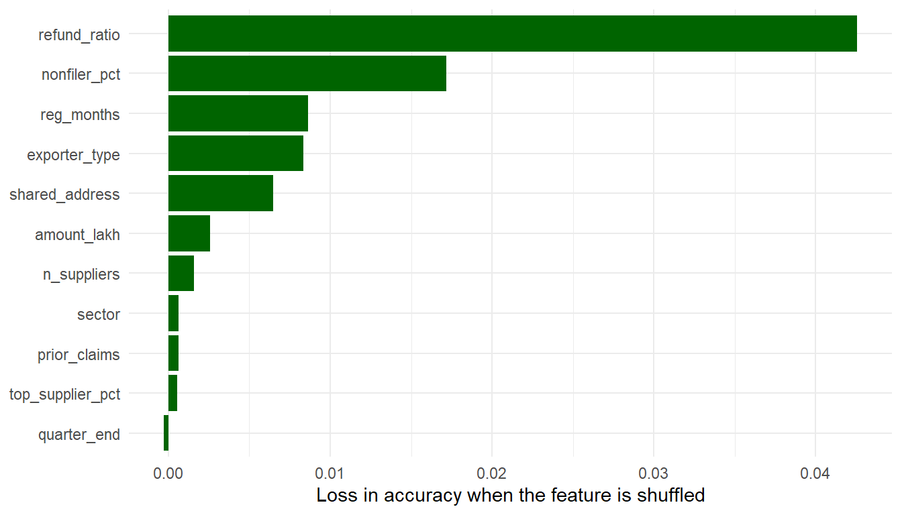
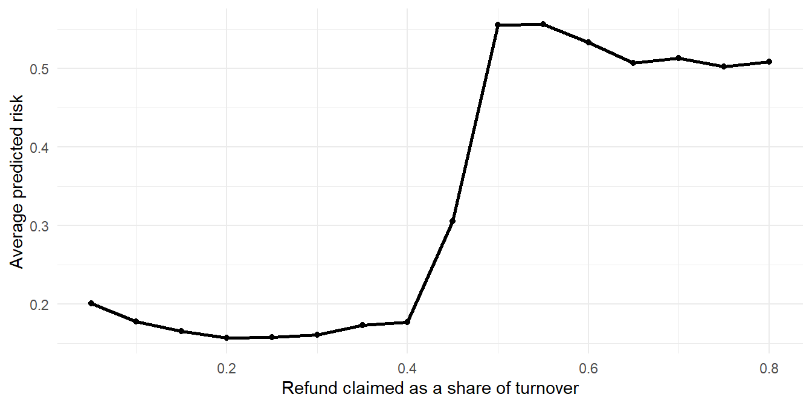
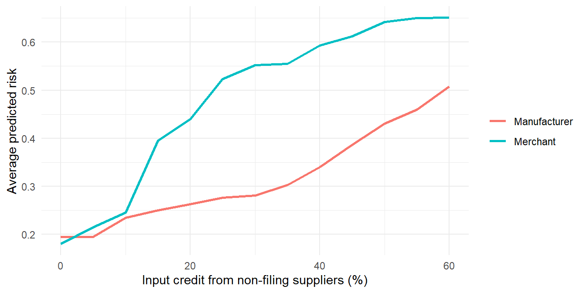

41 Random Forests
A single decision tree (Chapter 40) is easy to read, but it has a weakness we noted there. It is unstable. Grow it on a slightly different sample, and the questions, the thresholds and the predictions can all change. A random forest turns this weakness into a strength. It grows hundreds of trees, each on a slightly different sample of the data, and lets them vote. Individual trees make different mistakes, and in the average, many of the mistakes cancel out.
It is the same reason why an audit committee is wiser than any one of its members, or why the average of many independent estimates is usually closer to the truth than most of the estimates themselves. Random forests are among the most reliable methods for scoring risk, and they need very little tuning. The price is that a forest of 500 trees cannot be read like a single tree. We will see how to look inside it all the same.
Prerequisites
ranger is installed from CRAN with install.packages("ranger"). We also need the AUC function of Section 39.7.
41.1 Our data, refund claims with many red flags
We return to GST refund claims, as in Chapter 39, but this time the audit party recorded many more features for each of the 5,000 claims examined last year.
| Feature | Meaning |
|---|---|
exporter_type |
Manufacturer or merchant exporter |
sector |
Sector of the exporter |
reg_months |
Months since GST registration |
amount_lakh |
Refund claimed, ₹ lakh |
nonfiler_pct |
Percentage of input credit from suppliers who did not file returns |
refund_ratio |
Refund claimed as a share of the year’s turnover |
n_suppliers |
Number of suppliers |
top_supplier_pct |
Share of purchases from the largest supplier |
shared_address |
Whether the address is shared with another claimant |
quarter_end |
Whether the claim was filed in the last week of a quarter |
prior_claims |
Number of earlier refund claims |
Some of these matter and some do not, and the ones that matter do so in different ways: some gradually, some beyond a threshold, some only in combination with another feature. This is the kind of data where forests do well. The code is folded, and its comments say what was planted.
Code to create the refund claims
set.seed(46)
n <- 5000
claims <- tibble(
exporter_type = sample(c("Manufacturer", "Merchant"), n, TRUE, prob = c(0.65, 0.35)),
sector = sample(c("Textiles", "Engineering", "Chemicals", "Agro",
"Electronics", "Gems"), n, TRUE),
reg_months = pmax(1, round(rexp(n, 1 / 40))),
amount_lakh = round(rlnorm(n, log(8), 1), 2),
nonfiler_pct = round(100 * rbeta(n, 0.6, 6), 1),
refund_ratio = round(rbeta(n, 2, 5), 3),
n_suppliers = rpois(n, 8) + 1,
top_supplier_pct = round(100 * rbeta(n, 2, 2.5), 1),
shared_address = runif(n) < 0.06,
quarter_end = runif(n) < 0.3,
prior_claims = rpois(n, 3)
) |>
mutate(
# The true risk, unknown to the auditor:
true_logodds = -3.2 +
0.03 * nonfiler_pct + # gradual effect
0.07 * nonfiler_pct * (exporter_type == "Merchant") + # stronger for merchants
2.2 * (refund_ratio > 0.45) + # a threshold
1.8 * (n_suppliers <= 5 & top_supplier_pct > 60) + # a combination
1.6 * shared_address +
1.2 * (reg_months < 12) +
0.6 * sin(amount_lakh / 6), # a weak, wavy effect
# sector, quarter_end and prior_claims have no effect at all
irregular = runif(n) < plogis(true_logodds)) |>
select(-true_logodds)
set.seed(1)
train_rows <- sample(nrow(claims), size = 0.7 * nrow(claims))
train <- claims[train_rows, ]
test <- claims[-train_rows, ]claims# A tibble: 5,000 × 12
exporter_type sector reg_months amount_lakh nonfiler_pct refund_ratio
<chr> <chr> <dbl> <dbl> <dbl> <dbl>
1 Manufacturer Electronics 55 7.36 1.4 0.404
2 Manufacturer Textiles 10 11.2 1.8 0.175
3 Manufacturer Agro 103 1.15 2.5 0.207
4 Manufacturer Gems 5 5.11 16.4 0.294
5 Manufacturer Chemicals 28 4.33 2.6 0.152
6 Merchant Chemicals 16 4.08 2.7 0.454
7 Merchant Chemicals 58 5.66 1.3 0.265
8 Manufacturer Electronics 5 5.39 4.5 0.287
9 Merchant Gems 34 6.75 2.1 0.385
10 Merchant Gems 1 3.66 10.1 0.592
# ℹ 4,990 more rows
# ℹ 6 more variables: n_suppliers <dbl>, top_supplier_pct <dbl>,
# shared_address <lgl>, quarter_end <lgl>, prior_claims <int>,
# irregular <lgl>mean(claims$irregular)[1] 0.2226About 22% of the claims were irregular. As before, the model learns from 70% of the claims and is judged on the other 30%.
41.2 From one tree to many
Before using a ready-made forest, let us build a small one by hand, to see why it works. First, a single tree, judged on the test set.
[1] 0.7450786Now we grow 50 trees, each on a bootstrap sample of the training data: a sample of the same size, drawn with replacement, so that some claims appear twice and others not at all. Each tree sees a slightly different picture of the data.
Min. 1st Qu. Median Mean 3rd Qu. Max.
0.7148 0.7423 0.7497 0.7485 0.7618 0.7748 [1] 0.7838601The 50 trees vary, with AUCs from 0.715 to 0.775. But their average scores 0.784, better than even the best single tree among them. This is called bagging (from bootstrap aggregating), and it is the heart of a random forest.
A random forest adds one more twist. At every split, each tree may choose only from a random subset of the features, not from all of them. This stops all the trees from asking the same strong question first, and makes them more different from one another. Usually that improves the average further, though, as we will see, not always by much.
41.3 Growing a random forest with ranger()
ranger() does all this, quickly. The formula is as before; irregular ~ . means “irregular, explained by all the other columns”. We turn the outcome into a factor and ask for probability = TRUE, so that the forest gives the share of trees voting irregular, a risk score, rather than just a yes or no.
Ranger result
Call:
ranger(irregular ~ ., data = mutate(train, irregular = factor(irregular)), num.trees = 500, probability = TRUE, importance = "permutation")
Type: Probability estimation
Number of trees: 500
Sample size: 3500
Number of independent variables: 11
Mtry: 3
Target node size: 10
Variable importance mode: permutation
Splitrule: gini
OOB prediction error (Brier s.): 0.1369406 The printout gives the settings. Mtry is the number of features each split may choose from (by default, about the square root of the number of features), and Target node size the smallest group a tree will split further. These defaults work well most of the time.
The OOB prediction error deserves a word. Each tree was grown on a bootstrap sample, which leaves out about a third of the claims. For each claim, the trees that did not see it can predict it, like a test set built into the method. This out-of-bag (OOB) error is an honest estimate of how the forest will do on new data, available without setting aside a test set. For a probability forest, it is the Brier score, the average squared difference between the predicted probability and the actual outcome (0 or 1). Smaller is better.
Predictions on new data come from predict(). The result holds a matrix of probabilities, one column per outcome.
41.4 Forest, tree and logistic regression compared
Let us fit a logistic regression with all the features too, and compare the three on the test set.
logistic single_tree forest
0.753 0.745 0.769 The forest ranks the claims better than the other two. Logistic regression assumes each feature acts separately and in a straight line, so it misses the threshold, the combination and the stronger effect for merchants. The single tree can capture these, but crudely and unstably. The forest captures them more smoothly.
Notice, though, that our hand-made bag of 50 pruned trees did a little better still (0.784). The reason is in the settings. By default, ranger() grows each tree very deep, until groups of about 10 claims remain. Whether a claim turned out irregular is partly chance, and such deep trees learn some of that chance. Our pruned trees were shallower. We come back to this in Section 41.6.
In audit terms, the gains table of Section 39.7 shows what this means for a team that can examine one claim in five.
logistic single_tree forest
49 41 52 The figures are the percentage of all the irregular claims that fall in the top 20% of each model’s scores.
41.5 Looking inside the forest
A forest cannot be drawn like a tree, but two tools tell us what it has learnt.
41.5.1 Which features matter? Variable importance
We asked for importance = "permutation". For each feature, the forest shuffles that column, so that its link with the outcome is broken, and measures how much worse the out-of-bag predictions become. A feature the forest relies on causes a big loss when shuffled. A useless one causes none.
importance_df <- tibble(feature = names(forest$variable.importance),
importance = forest$variable.importance) |>
arrange(importance)
importance_df |>
ggplot(aes(importance, fct_inorder(feature))) +
geom_col(fill = "darkgreen") +
labs(x = "Loss in accuracy when the feature is shuffled", y = NULL) +
theme_minimal()
The refund-to-turnover ratio and the credit from non-filers matter most, followed by exporter type, new registration and a shared address. sector, quarter_end and prior_claims, which we planted with no effect, are at or near zero, and slightly negative values simply mean “no use at all”. Note also top_supplier_pct. It does matter, but only together with a small number of suppliers, a combination that affects few claims, so its importance is low. Importance measures a feature’s overall contribution, and a real but rare pattern can score low. So read a low importance as “rarely useful”, not as “never matters”. This alone is valuable to an audit team. It tells them which red flags have actually gone with irregularity in the past, and which are folklore.
41.5.2 How does risk change with a feature? Partial dependence
Importance says how much a feature matters, not how. A partial dependence plot shows how the average predicted risk changes as one feature changes, with everything else as it was. We compute it ourselves: set the feature to each value in turn for every claim in the test set, predict, and average.
partial_dependence <- function(model, data, feature, values) {
map_dbl(values, \(v) {
data[[feature]] <- v
mean(predict(model, data = data)$predictions[, "TRUE"])
})
}
ratio_grid <- seq(0.05, 0.80, by = 0.05)
pd_ratio <- tibble(refund_ratio = ratio_grid,
avg_risk = partial_dependence(forest, test, "refund_ratio", ratio_grid))pd_ratio |>
ggplot(aes(refund_ratio, avg_risk)) +
geom_line(linewidth = 1) +
geom_point() +
labs(x = "Refund claimed as a share of turnover", y = "Average predicted risk") +
theme_minimal()
The risk is flat up to a ratio of about 0.45, then jumps, and is flat again. The forest has found the threshold we planted, without being told, and shows it in a form an audit team can turn into a rule of thumb: refund claims above about 45% of turnover deserve a closer look. A logistic regression would have drawn a smooth slope instead, too high below the threshold and too low above it.
The same function, applied separately to merchants and manufacturers, shows the combined effect of exporter type and credit from non-filers.
nonfiler_grid <- seq(0, 60, by = 5)
pd_nonfiler <- map(c("Manufacturer", "Merchant"), \(type) {
subset <- test |> filter(exporter_type == type)
tibble(exporter_type = type, nonfiler_pct = nonfiler_grid,
avg_risk = partial_dependence(forest, subset, "nonfiler_pct", nonfiler_grid))
}) |> list_rbind()
pd_nonfiler |>
ggplot(aes(nonfiler_pct, avg_risk, colour = exporter_type)) +
geom_line(linewidth = 1) +
labs(x = "Input credit from non-filing suppliers (%)", y = "Average predicted risk",
colour = NULL) +
theme_minimal()
For merchants the risk climbs much more steeply.
41.6 Tuning, briefly
Forests need little tuning, but three settings are worth knowing.
-
num.trees, the number of trees. More is never worse, only slower. 500 is usually plenty. -
mtry, the number of features each split may choose from. Smaller values make the trees more different. -
min.node.size, the smallest group a tree may split. Larger values make simpler trees.
The out-of-bag error lets us compare settings without touching the test set.
tuning <- expand_grid(mtry = c(2, 3, 5), min.node.size = c(10, 50, 200)) |>
mutate(oob_error = map2_dbl(mtry, min.node.size, \(m, s) {
set.seed(1)
ranger(irregular ~ ., data = train |> mutate(irregular = factor(irregular)),
num.trees = 500, probability = TRUE, mtry = m, min.node.size = s)$prediction.error
}))
tuning |> arrange(oob_error)# A tibble: 9 × 3
mtry min.node.size oob_error
<dbl> <dbl> <dbl>
1 3 50 0.136
2 2 50 0.136
3 5 50 0.136
4 5 200 0.137
5 2 10 0.137
6 3 10 0.137
7 3 200 0.137
8 5 10 0.138
9 2 200 0.139The lowest out-of-bag error is at mtry = 3 and min.node.size = 50. Larger leaves, as we suspected, suit this noisy outcome better than the default of 10. Let us refit with the chosen settings, and only now check the test set.
set.seed(1)
forest_tuned <- ranger(irregular ~ ., data = train |> mutate(irregular = factor(irregular)),
num.trees = 500, probability = TRUE,
mtry = best$mtry, min.node.size = best$min.node.size)
tuned_auc <- auc(predict(forest_tuned, data = test)$predictions[, "TRUE"], test$irregular)
round(c(default_forest = model_aucs[["forest"]], tuned_forest = tuned_auc), 3)default_forest tuned_forest
0.769 0.780 The tuned forest’s AUC rises to 0.78, level with our hand-made bag of pruned trees. The differences between settings are small, as they usually are. Do not expect tuning to transform a forest. Better features (Section 39.8) usually help far more. One more point: the out-of-bag error measures how close the predicted probabilities are to the outcomes, while the AUC measures the ranking. The two usually agree on what is better, but not always exactly.
41.7 When a forest does not help
Forests are not always better. In Chapter 40, irregularity in works contracts followed two simple rules, “short window and few bidders” and “large nomination”. A single pruned tree is exactly the right shape for such data. Let us grow a forest on the same data.
Code to recreate the works contracts of the decision trees chapter
set.seed(33)
n_w <- 3000
works <- tibble(
department = sample(c("Roads", "Buildings", "Irrigation", "Water Supply"), n_w, TRUE),
tender_mode = sample(c("Open", "Limited", "Nomination"), n_w, TRUE, prob = c(0.7, 0.2, 0.1)),
value_lakh = round(rlnorm(n_w, log(60), 0.9), 1),
window_days = pmax(3, round(rnorm(n_w, 26, 7))),
bidders = pmax(1, rpois(n_w, 4.5))
) |>
mutate(bidders = if_else(tender_mode == "Nomination", 1, bidders),
risk = case_when(
tender_mode == "Nomination" & value_lakh > 100 ~ 0.60,
window_days < 21 & bidders <= 2 ~ 0.65,
window_days < 21 ~ 0.15,
TRUE ~ 0.04),
irregular = runif(n_w) < risk) |>
select(-risk)
set.seed(1)
w_rows <- sample(nrow(works), size = 0.7 * nrow(works))
w_train <- works[w_rows, ]
w_test <- works[-w_rows, ]set.seed(1)
w_tree <- rpart(irregular ~ ., data = w_train, method = "anova")
set.seed(1)
w_forest <- ranger(irregular ~ ., data = w_train |> mutate(irregular = factor(irregular)),
num.trees = 500, probability = TRUE)
round(c(single_tree = auc(predict(w_tree, w_test), w_test$irregular),
forest = auc(predict(w_forest, data = w_test)$predictions[, "TRUE"], w_test$irregular)), 3)single_tree forest
0.775 0.736 Here the single tree does as well as, or better than, the forest. The forest’s many deep trees also pick up chance patterns in the noise, while the pruned tree keeps only the two real rules, and gives them to us in readable form. So, as always, compare the methods on test data, and prefer the simpler one when it does as well.
| Logistic regression | Single tree | Random forest | |
|---|---|---|---|
| Ranking accuracy | Good when effects are gradual and separate | Good when risk follows a few simple rules | Usually the best, especially with many features and mixed effects |
| Explaining the result | Odds ratios, one per feature | Readable rules | Importance and partial dependence plots only |
| Stability | Stable | Unstable | Very stable |
| Effort | Needs features shaped by hand | Needs pruning | Works well with defaults |
Use a forest to rank cases and to learn which red flags matter, and a logistic regression or a tree to explain the selection. A common pattern is to select cases by forest score, and then show, in the audit plan, the importance chart and partial dependence plots, along with a simple tree fitted to the forest’s scores, as a readable summary of what drove the selection.
The isolation forest of Section 47.9 is a cousin of the random forest. It too grows many random trees, but uses them to find unusual records, without needing any past audit outcomes.
A forest is harder to explain to an auditee, or to a court, than a rule. Never present a forest’s score as the reason for an observation. The observation must rest on what the examination of the case found. The score only explains why the case was examined.
41.8 A suggested workflow
- Prepare past cases with known outcomes, and split them into training and test sets.
- Fit a baseline: a logistic regression and a pruned tree.
-
Grow a forest with
ranger(..., probability = TRUE, importance = "permutation"), with default settings. - Compare all three on the test set, with the AUC and the share caught in the top-ranked cases.
- Look inside the forest with variable importance and partial dependence plots, and check them against audit experience.
-
Tune lightly with the out-of-bag error. For noisy audit outcomes, try larger values of
min.node.size. - Score new cases, select mostly by score with a random part, and explain the selection with the plots and a simple summary model.
- A random forest averages hundreds of trees, each grown on a bootstrap sample with random subsets of features.
- Averaging cancels out the mistakes of individual trees, so forests are stable and usually rank well.
- The out-of-bag error is a free, honest estimate of performance on new data.
- Permutation importance shows which features matter; partial dependence shows how.
- A forest is not always better. Compare it with simpler models, and prefer them when they do as well.
41.9 Summary of functions used
| Function | Package | What it does |
|---|---|---|
ranger() |
ranger | Grow a random forest; probability = TRUE for risk scores, importance = "permutation" for importance |
predict() |
ranger, stats | Predictions for new data; for ranger, in $predictions
|
$prediction.error, $variable.importance
|
ranger | Out-of-bag error and feature importance of a forest |
rpart() |
rpart | A single tree, for comparison and bagging by hand |
glm(family = binomial) |
stats | Logistic regression, for comparison |
sample(replace = TRUE) |
base R | Draw a bootstrap sample |
map(), map_dbl(), map2_dbl(), reduce()
|
purrr | Grow many trees, and average their predictions |
expand_grid() |
tidyr | All combinations of tuning settings |